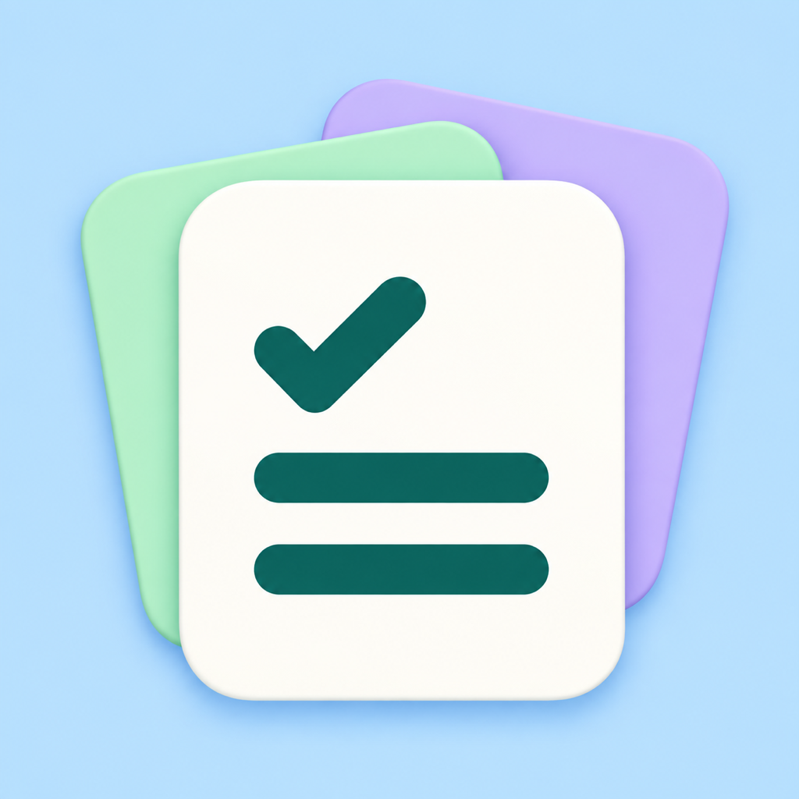

Little List
Grocery Planner for iPhone
A little less to remember at the grocery store.
Keep a shopping list for each store. Quickly add what you need, check off what you buy, and pick up where you left off.
Your shopping, organized
Create and reorder lists, arrange your items, and add notes for the details you don’t want to forget. Move an item to another store when plans change.
Start with a photo
Take a photo or choose one to get suggested item names. Review, edit, and confirm the names before adding them to your list. Photo recognition runs on your device. If a suggestion is wrong, enter the correct names and share a photo issue report.